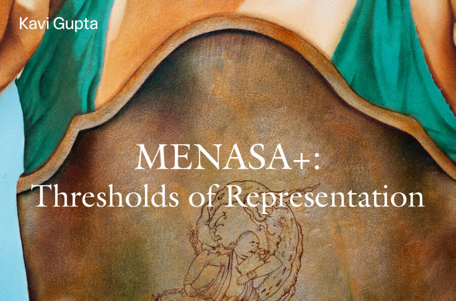

MENASA+: THRESHOLDS OF REPRESENTATION
This exhibition brings together artists from across the Middle East, North Africa, South Asia, Southeast Asia, and the AAPI diaspora— artists whose lived experiences of migration, hybridity, gender, and belonging redefine what global contemporary art can be. This curatorial framework positions MENASA+ and AAPI dialogues not as categories, but as interconnected conditions of making—translation, survival, inheritance, reinvention, and resistance. It reflects a belief that identity in art is not fixed but continuously negotiated across borders, languages, and histories of gendered power. At a time when geopolitics continues to compress complex identities into binaries of “us” and “them,” the art world has mirrored similar patterns of exclusion and invisibility. This presentation resists that logic. It centers practitioners— particularly female and femme-identifying artists from MENASA+ and AAPI regions—whose voices have emerged from unforgiving cultural and political contexts, yet continue to embody resilience, autonomy, and creative power.